비서-2급 (2017-11-12 기출문제)
1과목: 비서실무
1. 다음 중 전문비서의 직업윤리에 맞게 행동한 비서는 누구인가?
- 박비서 : 상사가 외부회의 참석 중일 때 인맥관리를 위해 한동안 통화를 못한 친구와 자신의 휴대폰으로 조용한 회의실에서 한 시간 동안 통화를 하였다.
- 강비서 : 상사의 신뢰를 얻기 위해 업무가 없더라도 언제나 늦게까지 남아 성실하게 근무한다.
- 윤비서 : 상사가 외부회의 중 전화로 중요한 기밀문서를 외부회의 장소로 가져와 달라고 하여 직접 전해드리기 위해 외출하였다.
- 한비서 : 회의 자료로 작성된 자사 주가전망 자료를 보고 회사에 투자한다는 마음으로 주식거래에 참고하였다.
(정답률: 77%)

2. 새로 입사한 한여름 비서는 선배들로부터 비서 업무를 효율적으로 수행하기 위해서는 인간관계 관리가 중요하다는 충고를 받았다. 다음 중 한비서의 업무태도로 가장 적절한 것은?
- 인간관계를 위한 네트워킹 차원에서 퇴근 후 회사사람들과 자주 어울리며 솔직하게 업무이야기를 하면서 친목을 도모한다.
- 상사의 출장업무 수행 시 도움을 받을 수 있도록 거래처 여행사 직원에게 명절에 개인적으로 선물을 하는 등의 노력을 하였다.
- 지역 비서 모임에 가입하여 다른 기업의 비서들과 비서의 경력 개발과 관련하여 도움을 주고받았다.
- 상사와 업무상 관련성이 높은 인사들의 정보를 공식적 및 비공식적 정보를 모두 수집하여 비서 업무 수행 시 활용하였다.
(정답률: 78%)
3. 예약 업무를 수행하는 비서의 자세로 가장 바람직한 것은?
- 상사 해외 출장 일정이 다음 달로 예정되어 있어 아직 시간적 여유가 많아 추후 변경될 가능성이 있어 항공권 예약은 하지 않았다.
- 외국인 손님들을 위해 각 문화별로 추천할만한 음식점 목록을 만들어 두었다.
- 상사가 자주 이용하는 음식점의 예약 담당자와 좋은 인간 관계를 맺기 위해 자주 음식점을 방문한다.
- 상사 출장과 관련하여 숙박 시설을 예약할 때 우리 회사와 거래하는 주 여행사에만 견적서를 요청한다.
(정답률: 80%)
4. 다음은 상사의 회의 일정을 확정하고자 할 때 일반적으로 비서가 수행하는 절차이다. <보기>에 제시한 일정 확인 절차를 순서대로 바르게 나열한 것은?
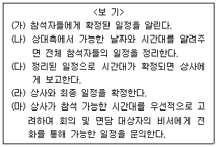
- (가) - (나) - (다) - (라) - (마)
- (가) - (나) - (라) - (다) - (마)
- (마) - (나) - (다) - (라) - (가)
- (마) - (나) - (라) - (다) - (가)
(정답률: 73%)
5. 다음 (a)와 (b)에 들어갈 말로 바른 것은?
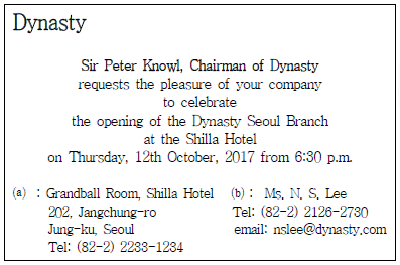
- (a) venue, (b) bcc
- (a) place, (b) contact
- (a) cc, (b) RSVP
- (a) venue, (b) RSVP
(정답률: 53%)
6. 호칭에티켓에 대한 설명이 올바르지 않은 것은?
- 상대방이 자신의 first name(이름)을 불러도 좋다고 하기전에는 경칭을 사용한다.
- 영어권에서는 last name(성)에 Mr./Mrs./Ms. 등을 붙인다.
- 독일 등 유럽의 일부 나라에서는 회사의 직함이 학위를 통해 얻은 직함보다 더 존중되어야 하고 중요하므로 명함을 받았을 때 주의 깊게 보고 부른다.
- 호칭에 있어 발음에 주의한다. 그 나라 방식대로 발음하는 것이 기본 매너이므로 국가별 호칭과 이름 문화에 주의하고, 자신이 없으면 사전에 물어본다.
(정답률: 61%)
7. 보고 자세에 대한 설명으로 부적절한 것은?
- 보고 내용이 많아 시간이 많이 걸릴 것으로 예상될 경우 미리 양해를 구한 후 보고한다.
- 보고할 때 객관적인 내용과 자신의 의견은 구분하여 보고한다.
- 본인이 판단하고 결정하기 어려운 문제일지라도 최선을 다해 업무 처리를 한 후 상사에게 결과를 보고하도록 한다.
- 다른 상급자로부터 업무 지시를 받은 경우 본인의 직속 상급자에게도 보고한다.
(정답률: 59%)
8. 다음 중 회의용어 한자가 잘못 짝지어진 것은?
- 표결(表決) : 안건의 토론 과정이 끝나면 안건을 최종적으로 결정하는 단계이다.
- 채결(採決) : 의장이 회의 참석자에게 거수, 기립, 투표 등의 방법으로 의안에 대해 찬성 및 반대를 결정하는 것이다.
- 재청(再請) : 타인의 동의를 얻어 거듭 청하는 것이다.
- 의안(義眼) : 회의에서 심의하고 토의할 안건을 말한다.
(정답률: 39%)
9. 다음은 회사의 고객들에게 연하장을 발송할 때 유의해야할 내용들이다. 가장 바르게 설명된 것을 고르시오.
- 연하장을 보내지 않은 사람으로부터 연하장을 받았을 때는 받은 해에는 일단 유보하고 다음 해 발송목록에 추가한다.
- 연하장을 주문할 경우 예산보다는 상사의 취향이나 기호를 기준으로 모양과 수량을 결정한다.
- 연하장 발송 업무는 대개 음력 설날까지는 지속하는 것이 바람직하다.
- 회사의 VIP 고객일 경우, 업무 관련성이 있는 임원들이 모두 개별적으로 VIP 고객에게 연하장을 보내도록 한다.
(정답률: 48%)
10. 다음 중 전화기의 기능에 대한 설명으로 바르지 않은 것은?
- 단축 다이얼은 자주 거는 전화번호를 단축키로 줄여서 저장하는 기능을 말한다.
- 착신 통화 전환은 걸려오는 전화를 휴대폰 혹은 다른 번호에서도 받을 수 있도록 착신을 전환하는 기능이다.
- 음성 정보 서비스(ARS)는 상대방의 전화 전원이 꺼져 있거나 전화를 받지 않을 때 전하고 싶은 내용을 언제든지 상대방 사서함에 녹음, 저장하고, 상대방이 저장한 내용을 들을 수 있는 기능이다.
- 전환 버튼은 걸려온 전화를 다른 전화기에서 받을 수 있도록 연결해 주는 기능을 가진 버튼이다.
(정답률: 53%)
11. 강주은 비서는 새로운 업무가 주어지면서 과다한 업무로 인해 자신감이 상실되고 스트레스를 받고 있다. 이에 대처하는 자세 및 스트레스 관리방법에 대한 설명으로 가장 적절하지 않은 것은?
- 새로운 업무가 주어지는 것으로 인한 스트레스를 해소하고 업무에 자신감을 가질 수 있도록 관련된 세미나에 참석하거나 전문가의 조언을 받는다.
- 다른 사람에게 업무를 위임하기 보다는 모든 일을 스스로 해결하기 위해 업무와 관련된 모든 역량을 길러서 경쟁력을 갖추도록 한다.
- 규칙적인 운동과 긍정적인 마음으로 스트레스를 조정하면 자신감도 가질 수 있다.
- 현재 하고 있는 업무를 분석하여 업무를 조직화하여 업무의 효율성을 높인다.
(정답률: 72%)
12. 사장님은 내방객인 황시목 상무와 면담 직전에 비서에게 면담이 끝나면 황시목 상무를 강남수 전무 집무실로 안내해 드리라고 한다. 강남수 전무실은 한 층(17층) 올라가서 긴 복도를 따라 쭉가다가 왼쪽 모퉁이에 있다. 김비서가 황시목 상무를 안내할 때 지켜야할 사항으로 가장 옳지 않은 것은?
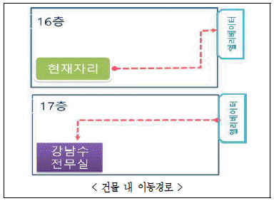
- 김비서는 안내할 때 황시목 상무보다 두서너 걸음 앞에서 안내한다.
- 김비서는 안내할 때 손가락으로 가리키지 말고 손등을 위로 하여 가고자 하는 방향을 가리키며 안내한다.
- 엘리베이터 승무원이 없어 김비서가 “먼저 실례하겠습니다.” 라고 한 후 먼저 타서 문이 닫히지 않도록 열림 버튼을 누르고 있다가 황시목 상무를 타게 한다. 내릴 때는 황상무가 먼저 내리도록 한다.
- 엘리베이터 안에서 김비서는 조작판 앞에 서고 황상무는 뒤편에 설수 있도록 배려한다.
(정답률: 64%)
13. 다음 상황문에서 괄호에 들어갈 표현으로 가장 부적절한 것은?
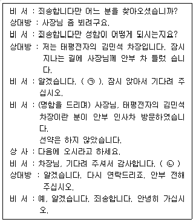
- ㉠ : 사장님께서 잠시 자리를 비우셨습니다. 곧 돌아오실 수 있는지 여쭤보겠습니다.
- ㉡ : 죄송합니다만 사장님께서 지금 바로 돌아오시기가 어렵다고 하십니다.
- ㉠ : 사장님께서 지금 회의 중이십니다. 회의가 길어지실 것 같습니다만 일정을 다시 한 번 확인해 보겠습니다.
- ㉡ : 확인해 보았으나 사전에 연락 없이 방문하실 경우 면담이 어렵다고 하십니다.
(정답률: 62%)
14. 다음 중 상황별 비서의 전화업무 처리로 가장 바람직한 경우는?
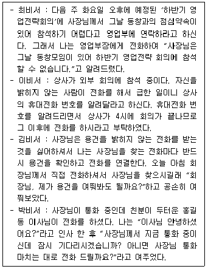
- 최비서
- 이비서
- 김비서
- 박비서
(정답률: 72%)
15. 다음 중 비서의 회의 보좌 업무에 대한 설명으로 가장 적절하지 않은 것은?
- 회의 준비를 위해 회의 목적 확인, 개최일시 확인, 참석자 범위 선정, 회의 장소 선정, 회의 운영 계획의 절차를 거친다.
- 오전에서 오후까지 이어지는 회의는 오전과 오후에 1~2회 휴식 시간을 넣는 것이 좋으며, 1시간 30분에서 2시간 사이에 한 번의 휴식이 적당하다.
- 회의 초청장에 RSVP 문구를 삽입함으로써 회의 참석 인원을 사전에 확인할 수 있다.
- 발표회나 설명회와 같이 정보 전달을 목적으로 하는 회의나 주주 총회 등 참석자가 많은 회의 개최 시 원탁형 좌석배치가 적절하다.
(정답률: 67%)
16. 비서가 상사의 메시지 전달 업무를 효율적으로 수행하는 방법으로 가장 적절하지 않은 것은?
- 지시 사항과 관련된 담당자가 현재 하고 있는 업무 내용 뿐아니라, 담당자의 현재 상황을 비서가 직접 점검한 후에 메시지 전달 시기를 결정해서 알려준다.
- 부서의 업무 내용, 조직 구성원의 직위 및 직책에 따른 업무내용과 업무 범위를 먼저 확인한 후 업무 담당자에게 상사의 지시 사항을 전달한다.
- 조직도를 통해서 조직 구성원에게 부과된 직무, 권한, 의무등을 이해하고 보고체계, 부서 성격과 부서간의 업무 배분등을 먼저 이해한다.
- 상사가 지시한 업무와 관련해서 전달할 내용은 구두, 문서, 전자메일, 사내 통신망 등의 다양한 방법 중에 적절히 선택하여 효율적으로 전달한다.
(정답률: 60%)
17. 보통은 상사가 사장단 회의 일주일 전에 부서장 회의를 개최하는데 이번에는 갑자기 사장단 회의 2주일 전인 이번 주 수요일에 긴급미팅을 소집하라고 지시하였다. 이 때 한비서의 업무처리 방식으로 가장 적절하지 않은 것은?
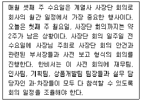
- 상사와 의논하여 회의 시간과 장소를 결정한 후 전화상으로 참석자들의 일정을 알아보고 회의에 참석할 수 있도록 요청한다.
- 단체 메신저 방에 긴급미팅 소집 내용을 올려 참석자들의 일정을 알아보고 회의에 소요될 시간과 참석인원수를 예상하여 회의시간을 정한다.
- 회의 일정이 잡히면 그 시간에 가능한 회의장소를 물색한다.
- 회의 통지문을 작성하여 참석자들에게 이메일로 발송한 후 참석여부 회신을 기다린다.
(정답률: 48%)
18. 상사 출장 중 비서의 업무 처리 방식으로 가장 적절하지 않은 것은?
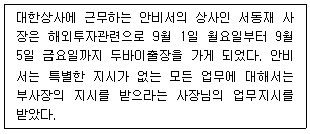
- 상사 출장 기간 중의 일정은 가능한 상사 귀국 이후로 조정하되, 9월 8일 월요일에는 가능한 외부 일정은 잡지 않도록 조치한다.
- 회사에서 발생한 모든 일은 한국시간으로 오전 중에 시간을 정해 매일 보고한다.
- 사내 업무는 상사 부재 시의 업무 권한 대리자인 부사장과 상의해 처리한다.
- 상사 출장 중 상사를 찾는 긴급 전화의 경우 상대방의 연락처를 받아 둔 후 상사에게 상황을 보고한 후 상사의 지시에 따른다.
(정답률: 67%)
19. 다음은 경조사용어들이다. 용어에 대한 설명이 바르지 않은 것은?
- 호상(護喪) : 상례를 거행할 때 처음부터 끝까지 모든 절차를 제대로 갖추어 잘 치를 수 있도록 상가 안팎의 일을 지휘하고 관장하는 책임을 맡은 사람.
- 단자(單子) : 부조나 선물 등의 내용을 적은 종이. 돈의 액수나 선물의 품목, 수량, 보내는 사람의 이름 등을 써서 물건과 함께 보냄
- 부의(賻儀) : 상가에 부조로 보내는 돈이나 물품. 또는 그런 일
- 발인(發靷) : 시신을 관속에 넣는 절차
(정답률: 44%)
20. 상사는 김비서를 불러 아래와 같이 지시하였다. 다음의 지시 내용 중 비서가 상사에게 바로 확인해야 할 사항으로 가장 거리가 먼 것은?
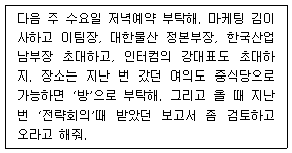
- 그날 저녁 약속이 상사의 기존 일정과 겹치지 않는지 여부
- 상사가 초대하는 사람들의 소속과 이름 및 인원 수
- 초대받은 사람들의 참석 가능여부
- 여의도 중식당의 이름과 보고서의 제목이나 간략한 내용
(정답률: 40%)
2과목: 경영일반
21. 다음 중 기업윤리에 대한 설명으로 가장 옳지 않은 것은?
- 최고경영진은 분명한 기업의 행동규범을 채택해야한다.
- 종업원은 기업의 의사결정과정에서 윤리적인 고려를 하도록 훈련받아야한다.
- 모든 기업은 윤리규범을 실행해야한다.
- 내부고발자는 기업에 피해를 입혔기 때문에 보복으로부터 보호받지 못한다.
(정답률: 65%)
22. 다음은 경영환경에 대한 요인을 열거한 것이다. 이 중 환경의 종류가 다른 것은 무엇인가?
- 주주
- 경영자
- 지역사회
- 조직문화
(정답률: 60%)
23. 다음 중 생산과 판매의 규모를 키움으로써 얻을 수 있는 이점과 가장 거리가 먼 것은?
- 개당 생산 원가를 줄일 수 있다.
- 시장 지배력을 키울 수 있다.
- 원재료 구입 시의 협상력을 키울 수 있다.
- 다품목 소량생산이 용이해진다.
(정답률: 60%)
24. 다음은 대기업과 비교해보았을 때 중소기업의 특징을 설명한 내용이다. 가장 거리가 먼 것은 무엇인가?
- 경영관리기법이 매우 다양하다.
- 주로 소유자가 경영을 담당한다.
- 시장범위의 한계성을 가지며, 전문경영자가 부족하다.
- 비교적 조직구조가 단순하며, 대기업의 종속성이 높을 수도 있다.
(정답률: 45%)
25. 다음의 벤처기업의 설명 중 가장 거리가 먼 것은 무엇인가?
- 하이테크기업, 모험기업, 연구개발형 중소기업 등으로 다양한 이름으로 불린다.
- 새로운 연구 성과를 기업화하는데 위험이 낮다.
- 경영조직이 관료적이 아니고 비교적 역동적이다.
- 창업자의 지적인 능력이 높으며, 이 중 대기업 및 연구소의 전문능력 및 고도의 기술을 가진 기업가들이 많다.
(정답률: 54%)
26. 다음의 설명 중 가장 적절하지 못한 것은?
- 합병은 기존의 독립적인 2개 이상의 개별기업이 결합하여 하나의 회사가 되는 것이다.
- 매수는 한 기업이 다른 회사의 자산을 매입함과 동시에 그 회사의 부채도 함께 승계한다.
- 합병은 결합형태에 따라 수평합병, 수직합병, 복합합병의 형태로 나뉠 수 있다.
- 수직합병은 동일한 영업과 동일한 시장에 속해있는 회사간의 합병을 의미한다.
(정답률: 53%)
27. 다음 중 경영통제 활동의 과정에 대한 설명으로 가장 적절하지 않은 것은?
- 표준설정은 평가활동의 첫 단계로 업무성과측정을 하기 위한 기초가 된다.
- 업무성과를 측정할 때는 수량적 표기를 위해 반드시 계량적 측정만 가능하므로 계량화가 어려운 부분은 통제대상이 될 수 없다.
- 수정을 위한 조치는 업무성과의 측정결과가 설정된 표준과 일치하지 않을 때 취해진다.
- 업무성과가 표준에 미달되었을 경우, 목표나 전략을 수정하거나 조직의 짜임새를 변경하는 등 다양한 방법으로 수정조치를 취할 수 있다.
(정답률: 60%)
28. 다음의 경영조직에 관한 서술 중 가장 적절하지 않은 것은?
- 수평적 조직, 네트워크 조직, 가상 조직 등은 기계적조직의 특성이 강한 조직이다.
- 사업부제 조직은 대규모 다품종 기업에 적합하다.
- 네트워크 조직은 본사는 소수의 핵심기능만을 수행하고 내부 여러 기능들은 아웃소싱하고 있는 조직이다.
- 유기적 조직은 낮은 공식화가 특징이다.
(정답률: 22%)
29. 다음의 경영자에 대한 설명으로 가장 적절하지 않은 것은?
- 경영자란 회사의 다양한 사업과 활동을 계획하고 조직화하고 통제하는 활동을 수행하는 사람이다.
- 최고경영자는 회사의 최고의사결정권자로 막강한 권력과 책임을 가지고 회사원들을 관리하는 일을 한다.
- 중간경영자는 최고경영자의 지시를 받아 업무를 수행하면서 일부는 다시 하위경영자에게 지시를 한다.
- 하위경영자는 주로 부장, 차장, 과장으로 구성되는데 경영활동을 현장에서 수행하는 역할을 한다.
(정답률: 55%)
30. 다음의 리더십 이론은 어느 것을 설명하는 것인지 가장 적합한 것은?
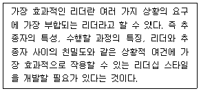
- 특성이론
- 행위이론
- 상황이론
- 직무이론
(정답률: 60%)
31. 개인이나 조직의 의사결정은 조직 성과로 연결되는 중요한 요소이다. 다음 중 조직의 의사결정에 대한 설명으로 가장 적절한 것은?
- 정형적 의사결정은 일상적이고 구조화된 문제를 다루며 책임수준이 낮아서 조직의 하위계층에서 이루어진다.
- 의사결정과정에서 대안의 평가는 의사결정자의 직관과 판단에 따른다.
- 창의성이 요구되는 문제나 과업에는 개인의사결정보다 항상 집단의사결정이 더 적합하다.
- 집단의사결정은 시간과 비용이 적게 들기 때문에 비교적 시간적 여유가 없을 때 적합하다.
(정답률: 33%)
32. 제품수명주기는 제품이 시장에 도입되어 폐기까지의 과정을 말한다. 다음 중 제품수명주기의 각 단계에 대한 설명으로 가장 적절하지 않은 것은?
- 도입기에는 제품가격이 높은 편이지만 저조한 매출실적과 높은 광고비의 지출 때문에 이윤폭이 낮은 경향이 있다.
- 성장기는 시장잠재력을 확인한 경쟁자가 대거 시장에 진입하는 시기이며 이 시기에는 경험곡선효과에 의한 제조원가의 감소로 수익이 증가한다.
- 성숙기에는 제품에 대한 수요가 포화상태이므로 품질개선을 통해 매출을 최대한 올려 현금유입을 극대화하는 수확전략을 구사한다.
- 쇠퇴기에는 유휴생산시설이 증가하고 이윤감소 현상이 초래되어 많은 기업이 시장에서 제품을 철수하게 된다.
(정답률: 32%)
33. 다음 괄호에 들어갈 가장 적합한 용어는 무엇인가?
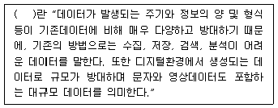
- 데이터베이스시스템(database system)
- 2차 데이터
- 전문가 데이터(expert data)
- 빅데이터(big data)
(정답률: 57%)
34. 경쟁자가 누구인지를 파악하기 위한 경쟁자분석방법으로 가장 적절하지 않은 것은?
- 지각도(perceptual map)
- 브랜드전환 매트릭스(brand switching matrix)
- 제품수명주기(product life cycle)
- 표준산업분류코드표를 이용하는 방법
(정답률: 46%)
35. 다음 중 기업의 임금 지급방법에 대한 설명으로 가장 옳지 않은 것은?
- 직무급은 직무의 상대적 가치에 따라 임금 수준을 결정한다.
- 연공급은 종업원의 직무수행능력을 기준으로 임금수준을 결정한다.
- 직무급은 ‘동일노동 동일임금 원칙’에 입각하고 있다.
- 연공급은 임금계산이 객관적이고 용이하며 근로자의 생활을 안정시키는 장점이 있다.
(정답률: 36%)
36. 다음 중 기업의 정보관리에 대한 설명으로 가장 적절하지 않은 것은?
- 기업의 정보관리 기능이란 조직 내 각종 의사결정이 효율적이고 효과적으로 이루어질 수 있도록 필요한 정보를 필요한 때에 필요한 사람들에게 체계적으로 제공하는 일체의 활동을 일컫는다.
- 전사적 자원관리(ERP : Enterprise Resource Planning)란 재무, 회계, 마케팅, 인사, 생산, 재고관리, 유통 등과 같은 경영의 전 기능을 체계적으로 계획, 관리, 통제하는 것을 목적으로 구축된 정보관리시스템이다.
- 공급사슬관리(SCM : Supply-Chain Management)란 원자재공급자, 생산자, 도매상, 소매상 그리고 최종소비자들을 포함하는 물자공급의 전 과정을 하나의 단위로 묶어 종합적으로 관리하는 정보관리시스템이다.
- 고객관계관리(CRM : Customer Relationship Management)란 마케팅, 영업, 서비스부서 등을 정보시스템을 통하여 묶어 미래고객을 제외한 현재와 과거고객에 집중하여 종합적으로 관리하는 정보관리시스템이다.
(정답률: 53%)
37. 다음은 무엇을 설명한 것인지, 가장 적합한 용어는 무엇인가?
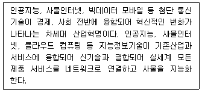
- 정보지능혁명
- 4차 산업혁명
- 네트워크 혁명
- 모바일 혁명
(정답률: 58%)
38. 다음 중 기업어음(Commercial Paper : CP)에 대한 설명으로 가장 적절하지 않은 것은?
- 기업어음은 기업이 재화나 용역을 공급받고 상거래에 수반되어 결제수단으로 사용하는 어음으로 진성어음이라고도 한다.
- 기업어음은 기업이 단기자금을 조달하기 위해 발행하는 융통어음이다.
- 기업어음은 할인매매가 가능해 단기 재테크 수단으로 활용된다.
- 신용도가 높은 기업은 낮은 금리로 기업어음을 발행할 수 있지만 신용도가 낮은 기업일 경우 금리가 올라간다.
(정답률: 29%)
39. 다음의 A, B, C는 무엇을 의미하는지 알맞은 순서대로 정리한 것은 무엇인가?
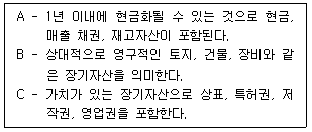
- 유동자산 – 고정자산 - 무형자산
- 유동자산 – 토지자산 - 가치자산
- 유형자산 – 고정자산 - 무형자산
- 유형자산 – 토지자산 - 가치자산
(정답률: 42%)
40. 다음의 빈칸에 들어갈 내용으로 가장 적절한 것은 무엇인가?
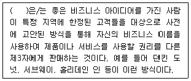
- 라이센싱(Licensing)
- 프렌차이징(Franchising)
- 합작투자(Joint Venture)
- 해외직접투자(Foreign Direct Investment)
(정답률: 64%)
3과목: 사무영어
41. Choose the one which does not correctly explain the abbreviation.
- TBD : to be determined (추후 결정)
- FYI : for your information (참고로)
- N/A : not appropriate (해당사항 없음)
- TBA : to be announced (추후 통지)
(정답률: 38%)
42. 아래 설명의 일을 하는 부서의 바른 영문 이름은?
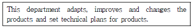
- Research and Development Department
- Accounting Department
- Sales Department
- Purchasing Department
(정답률: 45%)
43. Which of the following is the most appropriate expression for the blanks ⓐ, ⓑ, and ⓒ.
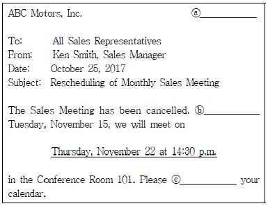
- ⓐ Announcement, ⓑ In spite of, ⓒ open
- ⓐ E-mail, ⓑ Instead of, ⓒ show
- ⓐ Fax, ⓑ As a matter of fact, ⓒ see
- ⓐ Memo, ⓑ Instead of, ⓒ mark
(정답률: 53%)
44. What kind of letter is this?
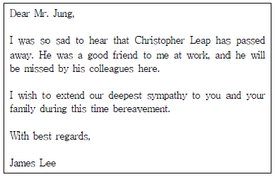
- Obituary Notice
- Announcement
- Condolences
- Requirements
(정답률: 47%)
45. Which of the followings is correct in order?
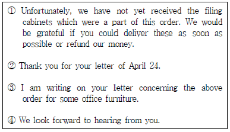
- ① - ② - ③ - ④
- ② - ③ - ① - ④
- ③ - ① - ④ - ②
- ① - ③ - ④ - ②
(정답률: 62%)
46. Choose the most appropriate subject for the following conversation.
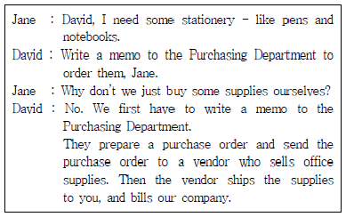
- Acknowledging an Order
- Requesting a Service
- Ordering Goods
- Confirming a Service
(정답률: 44%)
47. According to the below, which of the followings is NOT true?
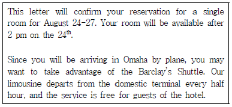
- 호텔 예약을 확인하는 편지이다.
- 호텔 check-in은 2시 이후에 가능하다.
- 바클레이즈 셔틀 버스는 국내청사에서 매 시간 30분에 있다.
- 바클레이즈 셔틀 버스는 호텔 손님에게 무료이다.
(정답률: 54%)
48. Which is not true according to the followings?
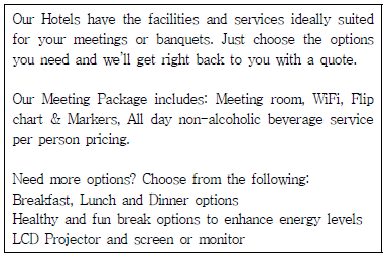
- 우리 호텔은 당신이 연회나 회의를 개최하는데 필요한 시설과 서비스를 갖추고 있다.
- 당신이 필요로 하는 선택 사항을 알려주면 바로 견적을 낼 수 있다.
- 우리의 회의 팩키지에 포함된 비알코올 음료는 인당 가격 기준으로 하루 종일 제공된다.
- 미팅 패키지에는 LCD 프로젝터와 스크린이 필수로 포함되어 있다.
(정답률: 50%)
49. Choose the most appropriate word for the blank.
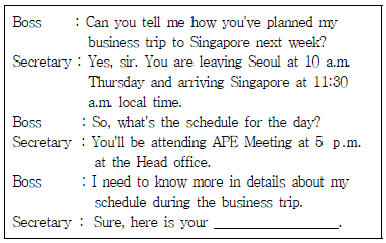
- agenda
- flight number
- memorandum
- itinerary
(정답률: 44%)
50. Which is the most appropriate word for the blank?
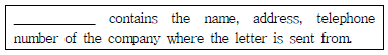
- Letterhead
- Inside address
- Message
- Complementary closing
(정답률: 40%)
51. Read the following conversation and choose one which is the least appropriate for the blank.
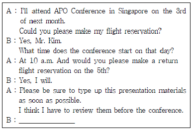
- Of course, I will.
- I'll have it ready.
- No problem. I'll get right on it.
- Sure. It's nothing urgent.
(정답률: 32%)
52. According to following airline guidelines, which is the least appropriate?
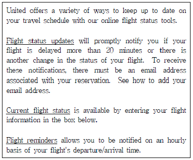
- 시간 단위로 당신의 비행기의 도착과 출발 시간을 통지받고 싶을 때는 Flight Reminders에서 확인할 수 있다.
- Flight Status Updates는 비행기가 20분 이상 연착되면 바로 당신에게 알려준다.
- 현재 비행기 상태 확인은 당신의 항공편 정보를 하단 박스에 입력하면 확인할 수 있다.
- 이 모든 서비스는 우리 항공사 마일리지 고객에게만 제공된다.
(정답률: 50%)
53. Who was the boss most likely to wait for according to the dialogue below?
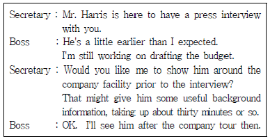
- a job applicant
- a reporter from the media
- a customer
- a contractor
(정답률: 34%)
54. Which of the following is not appropriate expression for the blank ⓐ?
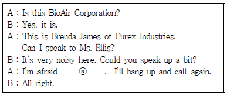
- it's a bad connection
- the line seems to be mixed up
- you have the wrong number
- we have a crossed line
(정답률: 38%)
55. Which is the most appropriate sentence for the blank?
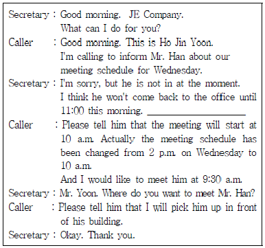
- Could I leave a message?
- Could I take a message?
- Would I leave a message?
- Would you like to take a message?
(정답률: 29%)
56. Choose one that is the most appropriate subject for the following conversation.
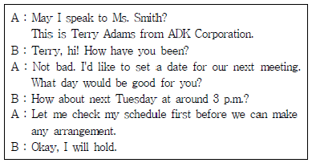
- cancelling an appointment
- confirming an appointment
- making an appointment
- delaying an appointment
(정답률: 46%)
57. According to the message below, why does Mr. Scott want Peter to call back?
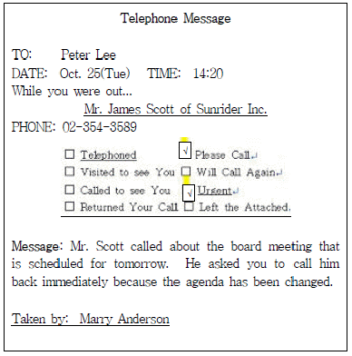
- to arrange board meeting
- to notify schedule change
- to inform topic change
- to contact board members
(정답률: 28%)
58. Which are appropriate for the blanks?
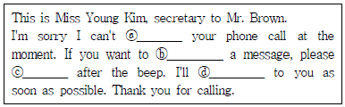
- ⓐ get, ⓑ take, ⓒ speak, ⓓ get back
- ⓐ take, ⓑ leave, ⓒ speak, ⓓ get back
- ⓐ give, ⓑ leave, ⓒ do, ⓓ return
- ⓐ take, ⓑ take, ⓒ do, ⓓ return
(정답률: 44%)
59. According to the following flight details of Mr. M. Y. Lee, which is not true?
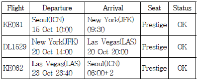
- Mr. Lee leaves Seoul for New York on KE081 on October 15.
- Mr. Lee arrives in Seoul on October 23.
- Mr. Lee flies to New York on business class.
- Mr. Lee arrives at the John F. Kennedy Airport on October 15.
(정답률: 42%)
60. Choose one that is the least appropriate expression for the blank.
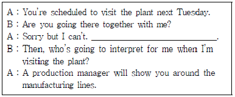
- I am going to meet with a client that day.
- I will be out of town next week on a business trip.
- I am willing to go there with you.
- I have to report an important matter to my boss next Tuesday.
(정답률: 32%)
4과목: 사무정보관리
61. 다음 중 아래의 위임전결표에 따른 결재 중 가장 올바르지 않게 처리된 것은?
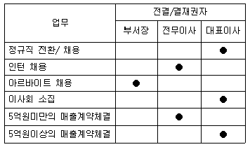
- 인턴사원의 정규직 전환을 위해서 전무이사에게 전결 받았다.
- 정기 이사회 소집을 위한 결재를 대표이사에게 결재 받았다.
- 5억원의 매출 계약 체결을 위하여 전무이사가 대결하였다.
- 아르바이트생 20명을 채용하기 위해서 인사부장이 전결하였다.
(정답률: 52%)
62. 다음 중 문서를 이용하기에 적절한 사항으로 묶인 것은?
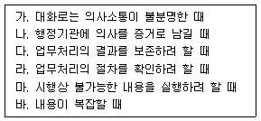
- 가, 나, 다, 마
- 나, 다, 라, 마
- 가, 나, 다, 라
- 가, 나, 마, 바
(정답률: 50%)
63. 상공자동차에서 근무 중인 김비서는 업무상 동일한 내용으로 거래처 300곳에 우편을 보내려고 한다. 이때 사용할 수 있는 우편제도로 가장 적당하지 않은 것은?
- e-그린우편
- 요금별납
- 요금후납
- 내용증명
(정답률: 36%)
64. 다음 밑줄 친 부분의 한글 맞춤법이 맞는 것은?
- 둘이 흥정을 부친다.
- 너는 성격이 야멸치다.
- 광고 비용을 주린다.
- 선생님으로써 자격이 없다.
(정답률: 47%)
65. 다음 중 상사의 우편물 처리 방법으로 가장 적절하지 않은 것은?
- 상사의 우편물은 중요도에 따라 분류한다.
- 상사가 비서에게 우편물 개봉을 허락하지 않은 경우는 분류만 하도록 한다.
- 우편물의 중요도 여부와 관련 없이 상사에게 온 우편물은 모두 상사에게 전달한다.
- 법원에서 온 문서의 경우 봉투와 내용물을 함께 전달한다.
(정답률: 58%)
66. 다음 중 감사장 작성 방법에 대한 설명으로 가장 옳지 않은 것은?
- 감사장은 상대방의 호의에 대해 감사하는 마음을 전하기 위해 작성한 문서이다.
- 회사와 관련된 축하행사 참석에 대한 감사장에는 순수한 감사의 마음만을 담고 회사의 선전을 하지 않는다.
- 출장 중 상대방의 호의에 대한 감사장은 출장지에서 돌아온 후 즉시 작성하도록 한다.
- 문상이나 장례식장 참석에 대한 감사장은 계절에 맞는 계절 인사를 첫머리에 쓴다.
(정답률: 44%)
67. 다음 중 업무 기능에 따른 문서 분류가 가장 거리가 먼 것은?
- 영업 문서 - 종업원 영업 관리 역량에 관한 사항
- 물자 문서 - 물자의 조달 및 관리, 공사 계약에 관한 사항
- 재무 문서 - 예산, 회계, 자금 관리에 관한 사항
- 경영 문서 - 전반적인 경영, 기획 및 감사에 관한 사항
(정답률: 49%)
68. 상사가 받아온 명함을 비서가 정리하고 있다. 이 중 업무처리가 가장 올바르지 않은 것은?
- 명함의 분류기준은 크게 성명과 회사명으로 나눌 수 있다.
- 회사명으로 분류하는 경우 회사명이 같은 경우에는 직급순으로 분류한다.
- 회전식 명함정리기구를 이용하는 경우 양쪽에 달린 손잡이를 이용하여 앞뒤로 회전시켜 가며 명함을 끼워 넣는다.
- 명함대상과 관련된 특이 사항이나 정보는 별도의 메모지에 기재하여 명함과 함께 정리용구에 보관한다.
(정답률: 26%)
69. 전자문서시스템의 특징으로 가장 거리가 먼 것은?
- 개인의 일하는 방식, 과정이 보장되고 서식의 개인화가 이루어져 신속한 업무처리가 가능하다.
- 결재자와 피결재자가 만나지 않아도 결재가 이루어질 수 있다.
- 전자문서의 체계적 분류에 따른 등록이 이루어져 검색이 용이하다.
- 추진내용 및 결재 처리 상황에 대한 실시간 확인이 가능하다.
(정답률: 42%)
70. 다음에서 설명하는 서비스를 제공하는 전자 정보 시스템 명칭으로 가장 적절한 것은?
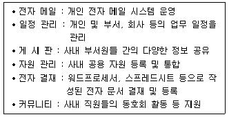
- 디지털 콘텐츠
- 클라우드 서비스
- 인터넷
- 그룹웨어
(정답률: 44%)
71. 엑셀 프로그램을 이용하여 데이터를 관리하고 있다. 다음 중 엑셀의 데이터 관리 기능 활용이 가장 적절하지 않은 것은?
- 조건에 맞는 자료만을 화면상에 보이게 하기 위해서 필터기능을 이용하였다.
- 부분합을 구하기 위해서 부분합을 구할 기준으로 정렬을 먼저 하였다.
- 데이터베이스 기능 활용을 위해 셀을 병합하여 유사한 항목은 묶어서 관리하였다.
- 부분합 기능을 이용하여 부분별 합계뿐만 아니라 평균도 산출하였다.
(정답률: 47%)
72. 다음 중 프레젠테이션 프로그램의 용도와 가장 거리가 먼 것은?
- 슬라이드 쇼 형식으로 대상자에게 정보를 보여준다.
- 문자와 그림 정보를 편집하거나 배치하여 대상자에게 전달한다.
- 컴퓨터로 작성된 화면을 빔 프로젝터와 연결하여 대상자에게 보여준다.
- 함수와 데이터베이스 기능을 활용하여 분석한 자료를 대상자에게 보여준다.
(정답률: 58%)
73. 서로 다른 기업 또는 조직 간에 표준화된 상거래 서식 또는 공공 서식을 서로 합의한 통신 표준에 따라 컴퓨터 간에 교환하는 전달방식을 의미하는 용어는?
- EDI
- EDMS
- ECM
- EDPS
(정답률: 40%)
74. 개인정보 노출현황을 분석한 차트이다. 이 차트를 통해 알 수 있는 내용과 가장 거리가 먼 것은?
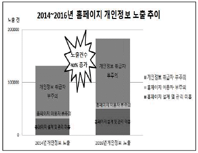
- 2014년 대비 2016년에는 개인정보 노출건수가 약 40%가 상승했다.
- 홈페이지 설계 및 관리 미흡은 감소하였다.
- 개인정보 취급자 부주의로 인한 노출은 큰 폭으로 증가하였다.
- 개인정보 유출은 홈페이지 자체의 문제, 이용자의 문제, 개인정보 취급자의 문제 세 가지로 나누어 분석하였다.
(정답률: 50%)
75. 다음 설명에 해당하는 용어는?
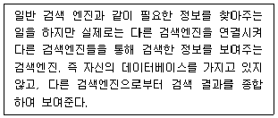
- 하이브리드 검색엔진
- 메타 검색엔진
- 알파 검색엔진
- 주제별 검색엔진
(정답률: 48%)
76. 다음 중 도메인 네임에 대한 설명이 잘못된 것을 모두 고르시오.
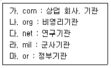
- 나, 다, 라
- 다, 마
- 다, 라, 마
- 나, 라, 마
(정답률: 32%)
77. 다음 중 비서의 정보 보안 업무가 가장 잘못된 것은?
- 중요한 서류나 기밀문서는 자물쇠를 활용하여 캐비닛에 보관하도록 한다.
- 사내 백신프로그램을 정기적으로 사용하고 업데이트한다.
- 중요 문서는 외장하드에 수시로 백업한다.
- 윈도우(windows) 암호는 시작 메뉴의 디스플레이 설정에서 변경한다.
(정답률: 39%)
78. 김비서는 상사와 자신의 스마트폰의 정보보호를 위해서 스마트폰을 다음과 같이 관리하고 있다. 이 중 가장 적절하지 않은 것은?
- 신뢰할 수 없는 사이트는 방문하지 않고, 의심스러운 앱은 다운로드하지 않았다.
- 스마트폰 앱 설치 시에 요구하는 권한이 과다하여 설치하지 않았다.
- 스마트폰 보안 잠금을 생체인식(지문 또는 홍채 등)을 이용하여 설정하였다.
- 스마트폰의 순정상태는 제약이 많으므로 루팅하여 기능을 향상시켰다.
(정답률: 45%)
79. 다음 중 클라우드서비스에 대한 설명으로 가장 적절한 것은?
- 해외 출장 시에는 클라우드 서비스의 이용이 불가능하다.
- 모바일 기기를 통해서는 파일을 다운로드만 할 수 있다.
- 클라우드서비스를 이용하여 문서를 업로드하면 읽기전용 파일로 변환되어 저장된다.
- 인터넷과 연결된 중앙컴퓨터에 저장해서 인터넷에 접속하기만 하면 언제 어디서든 데이터를 이용할 수 있다.
(정답률: 52%)
80. 다음 중 일반적으로 복합기에 포함되는 기능으로 가장 거리가 먼 것은?
- 복사 기능
- 제본 기능
- 팩스 기능
- 스캔 기능
(정답률: 52%)